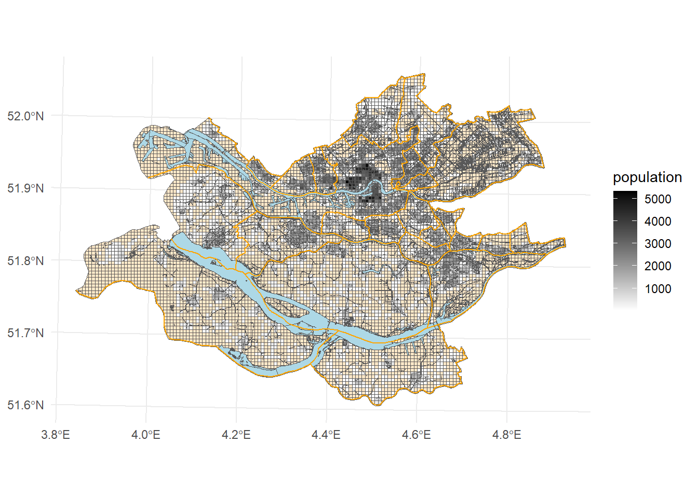
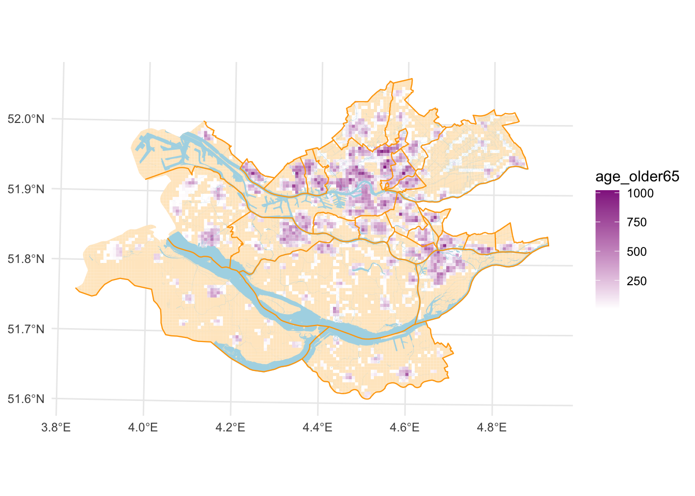
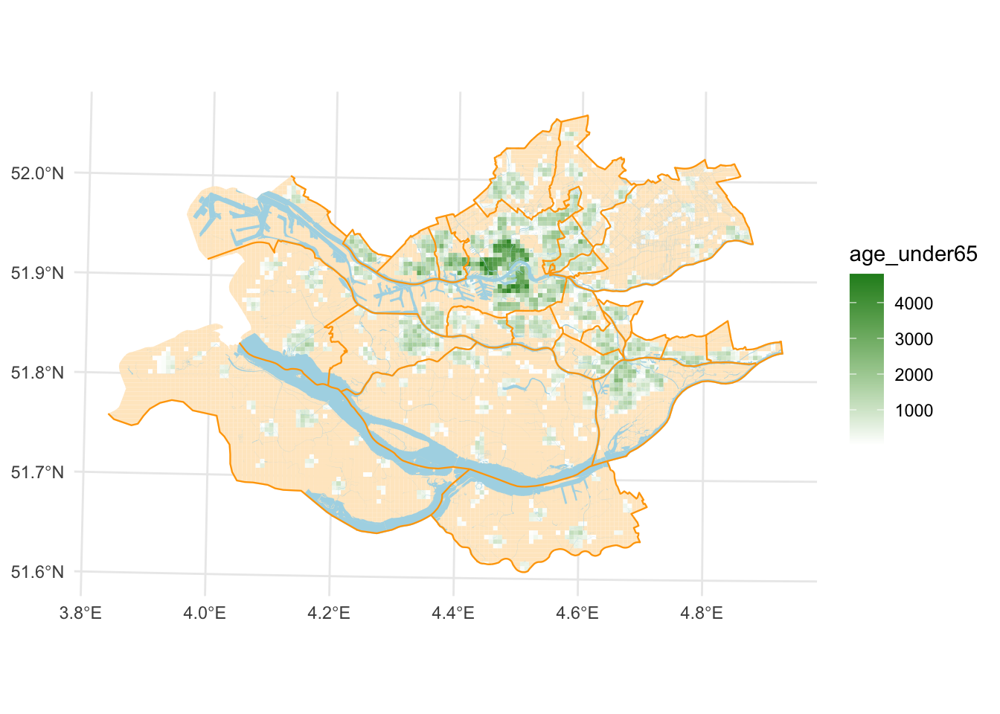
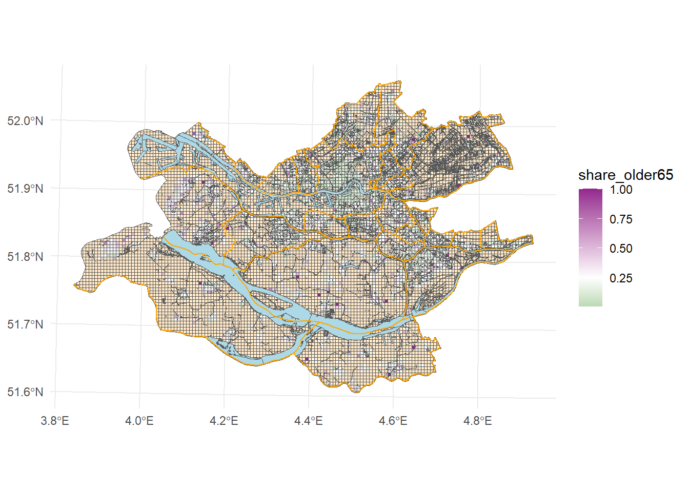

library(tidyverse)
library(sf)Computing segregation indices from existing packages
Introduction
Context and aim. Process.
Data
We are using open data from the Dutch statistics office CBS, and in particular 500x500 grid cells of Rotterdam. This is count-data coming from the Dutch register, as the 500m x 500m resolution (Statistiek (CBS), 2026). The data was clipped to fit the Rotterdam functional area as defined by the OECD (OECD, 2023). Municipal boundaries and waterbodies come from the kadaster (Kadaster, 2026).
Population density and spatial distribution
rotterdam_muni <- st_read("processed_data/rotterdam_muni.gpkg") |>
st_transform(28992) Reading layer `rotterdam_muni' from data source
`/Users/ccottineau/GitHub/2026Workshop/CodeAlong/ExistingPackages/processed_data/rotterdam_muni.gpkg'
using driver `GPKG'
Simple feature collection with 108 features and 12 fields
Geometry type: MULTILINESTRING
Dimension: XY
Bounding box: xmin: 48049.64 ymin: 402346.9 xmax: 123368.9 ymax: 453421
Projected CRS: Amersfoort / RD Newrotterdam_water <- st_read("processed_data/rotterdam_water.gpkg") |>
st_transform(28992) Reading layer `rotterdam_water' from data source
`/Users/ccottineau/GitHub/2026Workshop/CodeAlong/ExistingPackages/processed_data/rotterdam_water.gpkg'
using driver `GPKG'
Simple feature collection with 21116 features and 13 fields
Geometry type: MULTIPOLYGON
Dimension: XY
Bounding box: xmin: 48195.34 ymin: 402298.1 xmax: 123369.3 ymax: 453421.2
Projected CRS: Amersfoort / RD Newrotterdam2025 <- st_read("processed_data/rotterdam_500m.gpkg") |>
st_transform(28992) Reading layer `rotterdam_500m' from data source
`/Users/ccottineau/GitHub/2026Workshop/CodeAlong/ExistingPackages/processed_data/rotterdam_500m.gpkg'
using driver `GPKG'
Simple feature collection with 8645 features and 8 fields
Geometry type: MULTIPOLYGON
Dimension: XY
Bounding box: xmin: 48021.63 ymin: 402241.4 xmax: 123369.3 ymax: 453421.2
Projected CRS: Amersfoort / RD NewFENIX <- rotterdam2025 |> filter(crs28992res500m == "E0925N4350")
ggplot() +
geom_sf(data = rotterdam2025, aes(fill = population), linewidth=0) +
geom_sf(data = rotterdam_water, fill = "lightblue", linewidth=0) +
geom_sf(data = rotterdam_muni, colour = "orange", linewidth=0.4) +
# geom_sf(data = FENIX, colour = "#00A99D", linewidth=0.7) +
scale_fill_gradient(low = "white", high = "black", na.value = "#FFE9C9") +
theme_minimal()
ggplot() +
geom_sf(data = rotterdam2025, aes(fill = age_older65), linewidth=0) +
geom_sf(data = rotterdam_water, fill = "lightblue", linewidth=0) +
geom_sf(data = rotterdam_muni, colour = "orange", linewidth=0.4) +
scale_fill_gradient(low = "white", high = "#93278F", na.value = "#FFE9C9")+
theme_minimal()
ggplot() +
geom_sf(data = rotterdam2025, aes(fill = age_under65), linewidth=0) +
geom_sf(data = rotterdam_water, fill = "lightblue", linewidth=0) +
geom_sf(data = rotterdam_muni, colour = "orange", linewidth=0.4) +
scale_fill_gradient(low = "white", high = "forestgreen", na.value = "#FFE9C9")+
theme_minimal()
Ratio of populations
rotterdam2025 <- rotterdam2025 |>
mutate(share_older65 = age_older65 / population)
ggplot() +
geom_sf(data = rotterdam2025, aes(fill = share_older65), linewidth=0) +
geom_sf(data = rotterdam_water, fill = "lightblue", linewidth=0) +
geom_sf(data = rotterdam_muni, colour = "orange", linewidth=0.4) +
scale_fill_gradient2(midpoint = 0.25, low = "forestgreen", mid = "white", high = "#93278F", na.value = "#FFE9C9")+
theme_minimal()
Dissimilarity
Ignacio
Entropy
There are currently (at least) 3 packages available to compute entropy indices of segregation.
OasisR
OasisR was deprecated last year but seems to function well again: performs most categorical & ordinal measures of segregation + resampling methods to test significance https://cran.rstudio.com/web/packages/OasisR/OasisR.pdf
library(OasisR)
HTheilfunction (x)
{
x <- segdataclean(as.matrix(x))$x
result <- vector(length = ncol(x))
E <- matrix(data = 0, nrow = nrow(x), ncol = ncol(x))
pTotal <- colSums(x)/sum(x)
px <- x/rowSums(x)
Etot <- rep(0, ncol(x))
for (k in 1:ncol(x)) Etot[k] <- pTotal[k] * log(1/pTotal[k]) +
(1 - pTotal[k]) * log(1/(1 - pTotal[k]))
for (k in 1:ncol(x)) {
E[, k] <- px[, k] * log(1/px[, k]) + (1 - px[, k]) *
log(1/(1 - px[, k]))
if (any(is.nan(E[, k])))
E[, k][is.nan(E[, k])] <- 0
result[k] <- sum((rowSums(x) * (Etot[k] - E[, k]))/(Etot[k] *
sum(x)))
}
return(round(result, 4))
}
<bytecode: 0x887d8b5e8>
<environment: namespace:OasisR>This function takes as input x:
an object of class matrix (or which can be coerced to that class), where each column represents the distribution of a group within spatial units. The number of columns should be greater than 1 (at least 2 groups are required). You should not include a column with total population, because this will be interpreted as a group.
group_data <- as.data.frame(rotterdam2025) |>
mutate(share_under25 = (age_0_15 + age_15_25) / population,
share_25_65 = (age_25_45 + age_45_65) / population ) |>
select(share_under25, share_25_65, share_older65) |>
filter(share_under25 > 0 & share_25_65 > 0 & share_older65 > 0)
entropyOasisR <- HTheil(group_data)
entropyOasisR[1] 0.0174 0.0129 0.0507divseg
divseg performs diversity measures and indices proposed by Massey & Denton along the 5 dimensions of segregation https://christophertkenny.com/divseg/reference/index.html
library(divseg)
ds_entropyfunction (.data, .cols, .name, .comp = FALSE)
{
.cols <- rlang::enquo(.cols)
if (missing(.name)) {
.name <- "v_index"
ret_t <- FALSE
}
else {
ret_t <- TRUE
}
sub <- dplyr::select(drop_sf(.data), !!.cols)
if (ncol(sub) <= 1) {
stop(".cols refers to a single column")
}
sub <- dplyr::ungroup(dplyr::mutate(dplyr::rowwise(sub),
.total = sum(dplyr::c_across(everything()))))
.T <- sum(sub$.total)
.P <- sum(sub[[1]])/.T
.E <- .P * plog(1/.P) + (1 - .P) * plog(1/(1 - .P))
out <- dplyr::pull(dplyr::mutate(rowwise_if(dplyr::mutate(sub,
.p = pick_n(1)/.data$.total, .e = .data$.p * plog(1/.data$.p) +
(1 - .data$.p) * plog(1/(1 - .data$.p))), .comp),
`:=`(!!.name, sum(.data$.total * (.E - .data$.e))/(.E *
.T))), !!.name)
if (ret_t) {
relocate_sf(dplyr::mutate(.data, `:=`(!!.name, out)))
}
else {
out
}
}
<bytecode: 0x87b78c430>
<environment: namespace:divseg>This function takes as input a tibble (which means we can keep the sf format). You need to specify the columns with which to compute the measure.
Must be at least 2 columns. If more than 2, treats first column as first group and sum of other columns as second.
group_datadivseg <- rotterdam2025 |>
mutate(share_under25 = (age_0_15 + age_15_25) / population,
share_25_65 = (age_25_45 + age_45_65) / population ) |>
select(share_under25, share_25_65, share_older65) |>
filter(share_under25 > 0 & share_25_65 > 0 & share_older65 > 0)
entropydivsegunUnder25 <- ds_entropy(group_datadivseg, starts_with("share"))[[1]]
entropydivsegunUnder25[1] 0.01738609 group_datadivseg <- group_datadivseg |>
select(share_25_65, share_older65, share_under25)
entropydivsegun25_45 <- ds_entropy(group_datadivseg, starts_with("share"))[[1]]
entropydivsegun25_45[1] 0.01287292 group_datadivseg <- group_datadivseg |>
select(share_older65, share_25_65, share_under25)
entropydivsegunolder65 <- ds_entropy(group_datadivseg, starts_with("share"))[[1]]
entropydivsegunolder65[1] 0.05073242segregation
segregation: offers standards segregation indices (M, H, D + exposure indices), but also addesses sample bias, decomposition of entropy based indices and visalisation. https://www.rdocumentation.org/packages/segregation/versions/1.1.0
library(segregation)
entropyfunction (data, group, weight = NULL, base = exp(1))
{
if (!is.null(weight)) {
data[, "freq"] <- data[[weight]]
}
else {
data[, "freq"] <- 1
}
data.table::setDT(data)
n_total <- sum(data[, "freq"])
p <- data[, list(p = sum(freq)), by = group][["p"]]/n_total
sum(p * logf(1/p, base))
}
<bytecode: 0x87af41d58>
<environment: namespace:segregation>The segregation package requires data in long form (because most segregation data comes in this form), not in the form of contingency tables.
https://cran.r-project.org/web/packages/segregation/vignettes/segregation.html
long_data <- as.data.frame(rotterdam2025) |>
mutate(under25 = age_0_15 + age_15_25,
group25_65 = age_25_45 + age_45_65) |>
select(crs28992res500m, under25, group25_65, age_older65) |>
pivot_longer(!crs28992res500m,names_to = "group", values_to = "n") |>
filter(n > 0)
total <- mutual_total(long_data, "group", "crs28992res500m", weight = "n")
local <- mutual_local(long_data, "crs28992res500m", "group", weight = "n", wide = T)
total stat est
<char> <num>
1: M 0.03408428
2: H 0.03365595 localKey: <group>
group ls p
<char> <num> <num>
1: age_older65 0.10700448 0.1952732
2: group25_65 0.01011701 0.5263689
3: under25 0.02825101 0.2783579Index comparison
We end up with the following measures of group segregation:
| Age category | Package | Entropy value |
|---|---|---|
| Under 25 | OasisR | 0.0174 |
| Under 25 | divseg | 0.0173861 |
| Under 25 | segregation | 0.028251 |
| 25 to 25 y.o. | OasisR | 0.0129 |
| 25 to 25 y.o. | divseg | 0.0128729 |
| 25 to 25 y.o. | segregation | 0.010117 |
| Over 65 | OasisR | 0.0507 |
| Over 65 | divseg | 0.0507324 |
| Over 65 | segregation | 0.1070045 |
References
Kadaster. (2026). INSPIRE NL administratieve eenheden. https://www.nationaalgeoregister.nl/geonetwork/srv/dut/catalog.search#/metadata/7dd1fd45-ace5-41e0-93a6-64e3be231717
OECD. (2023). OECD definition of cities and functional urban areas. https://www.oecd.org/en/data/datasets/oecd-definition-of-cities-and-functional-urban-areas.html
Statistiek (CBS), C. B. voor de. (2026). Kaart van 500 meter bij 500 meter met statistieken. https://www.cbs.nl/nl-nl/dossier/nederland-regionaal/geografische-data/kaart-van-500-meter-bij-500-meter-met-statistieken